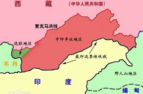

中印洞朗冲突
冲突地域地形3D展示
更换视图 缩小放大上下左右滑动模型翻转视角，除了极少数河谷山沟外，海拔4000米以上是很平常的事，作为中国人，不得不为自己国家的边防军战士点赞。
地势险要非常，此次冲突地域距离连接印度东北部要道“西里古里走廊”仅70公里。

冲突的由来
谁都不甘做小三，一心只想做老大。
两个文明古国、人口大国，近代以来绝对是难兄难弟，都被英国、日本糟蹋过。 不同的是：中国本着和平的心愿不忘耻辱、同情团结有同样遭遇的国家；印度忘记了，自信心爆棚地四处奔走。 话说到此次冲突，是两国“边境争议”的一件平常事。 英国是祸心，从殖民地被赶出去，也不忘记留下臭名昭著的一手——麦克马洪线，给这一地区人民埋下不幸的种子。  日本是帮凶，长期以来在中印边界问题上煽风点火、火上浇油。双方实力比较
除了本国的综合国力，还必须考虑国际环境。
钱袋子的表现，中国明显碾压印度。 中国长期以来自力更生建国防，印度长此以往依靠进口构军备。 因此，一旦爆发战争，实则检验国产和进口装备到底差距如何。 各事外国都是凑热闹、谋私利的，主要靠自己。 美国是唯一超级大国，此次中印冲突发生在内陆，并不在印度洋，因而俄罗斯的态度尤其重要； 事发地周围邻国的向背也显得举足轻重，因为所谓“西里古里走廊”的要道，不过是国境线夹出来的，并非地理条件。 现代战争，除了人和钱这样必备的基础，最重要的就是武器装备，这里进一步对比下两军主要的导弹、战机、舰船、潜艇、卫星的详细情况。
西藏南海，多事之秋。
看印度疆域，也江山如画。
结果分析
战
由于双方都是有核国家，因此不存在灭国的可能。 战争只可能在边境地区展开，都不宜陷入鏖战。 所以，即使战，最有可能的还是和一九六二年的战争一样，短平快。 输或赢，对于双方的影响，待续……和
真正的“和”不存在，只能说是双方退让，只是谁先退，已经势成骑虎，谁先退，谁自己打自己脸。 国家和个人如此相似的存在“面子问题”。 如何化解，待续……